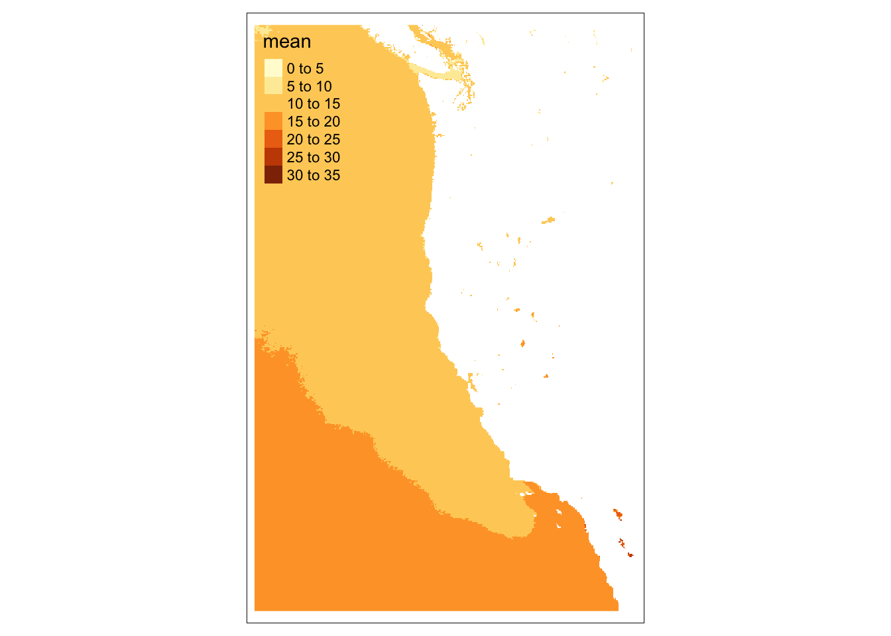
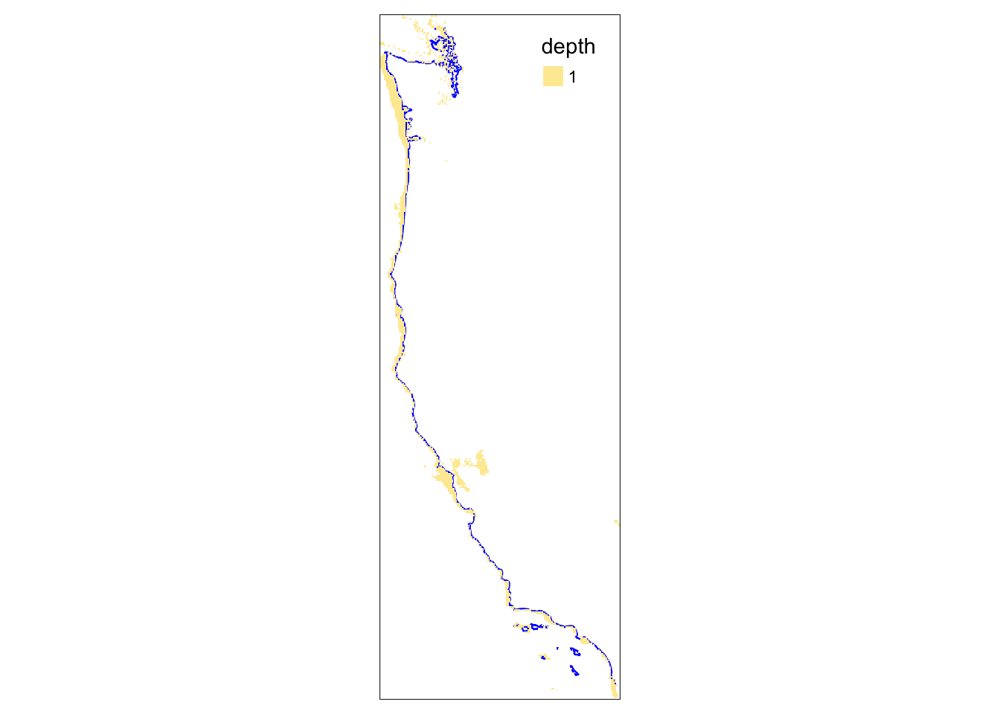
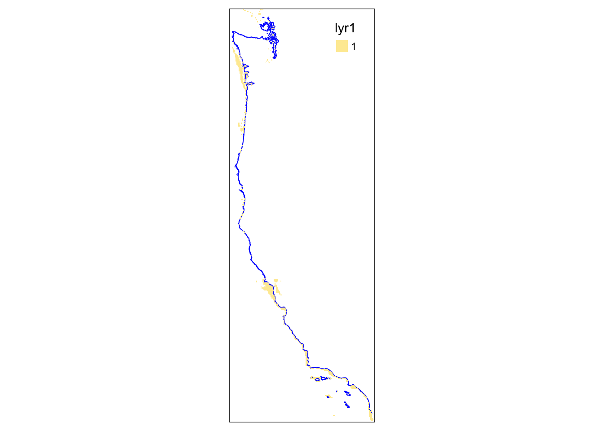
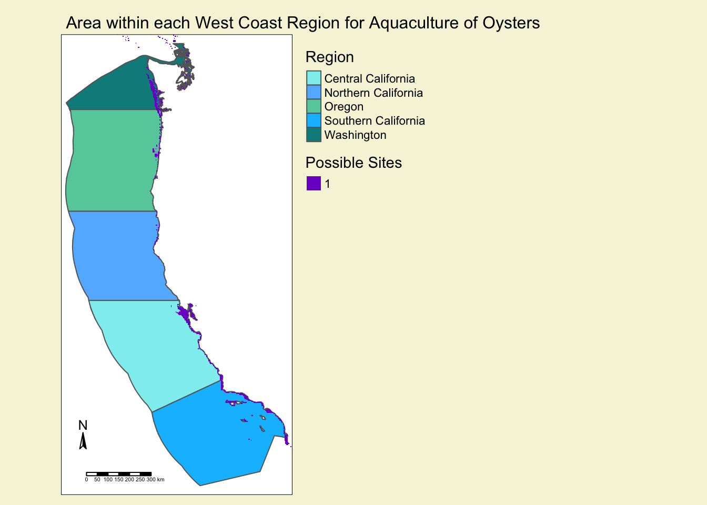
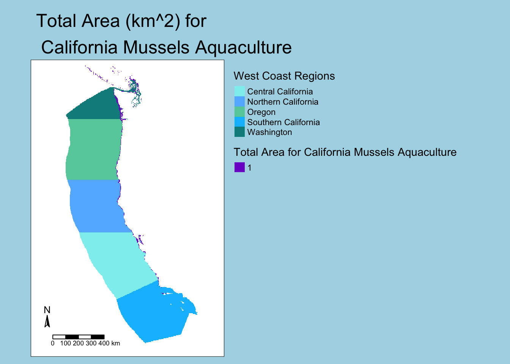

# Loading in raster data
# Bathymetry data
depth <-rast(here("data", "depth.tif"))
# Sea Surface Temperature (SST) data
SST_2008 <-rast(here("data", "average_annual_sst_2008.tif"))
SST_2009 <-rast(here("data", "average_annual_sst_2009.tif"))
SST_2010 <-rast(here("data", "average_annual_sst_2010.tif"))
SST_2011 <-rast(here("data", "average_annual_sst_2011.tif"))
SST_2012 <-rast(here("data", "average_annual_sst_2012.tif"))EDS223-Homework4
Assignment 4 Criteria:
- In this assignment, we are seeking to identify which ‘Exclusive Economic Zones’ on the western coast of the United States would be best suited to aquaculture of oysters and mussels.
The criteria to be met by this assignemnt (reproducibles) are as follows: - arguments: minimum and maximum sea surface temperature minimum and maximum depth species name - outputs: map of EEZ regions colored by amount of suitable area species name should be included in the map’s title
First, I will start off by loading in our libraries and assigning the data to variables
Running Libraries and Importing Data:
# Loading in vector data with sf
# West Coast EEZ Regions
wc_regions <- sf::st_read(here::here("data", "wc_regions_clean.shp")) Reading layer `wc_regions_clean' from data source
`/Users/madisonenda/Desktop/MEDS/EDS223/hw4-madisonenda/data/wc_regions_clean.shp'
using driver `ESRI Shapefile'
Simple feature collection with 5 features and 5 fields
Geometry type: MULTIPOLYGON
Dimension: XY
Bounding box: xmin: -129.1635 ymin: 30.542 xmax: -117.097 ymax: 49.00031
Geodetic CRS: WGS 84# West Coast Boundary
# Loading in the ejscreen data to create a base map
America <- sf::st_read(here::here( "data", "tl_2019_us_coastline",
"tl_2019_us_coastline.shp"))Reading layer `tl_2019_us_coastline' from data source
`/Users/madisonenda/Desktop/MEDS/EDS223/hw4-madisonenda/data/tl_2019_us_coastline/tl_2019_us_coastline.shp'
using driver `ESRI Shapefile'
Simple feature collection with 4248 features and 2 fields
Geometry type: LINESTRING
Dimension: XY
Bounding box: xmin: -179.1472 ymin: -14.5487 xmax: 179.7785 ymax: 71.39038
Geodetic CRS: NAD83# Filter the America data to only the desired states
# Filtering the US basemap to be texas counties
pacific_border <- America %>%
filter(NAME == "Pacific")Aggregate and Convert the Sea Surface Temp Data:
I should check to see if the coordinate reference systems of all the yearly sea surface temperature datasets match
# Checking the crs of all SST rasters to confirm they match
if (all(st_crs(SST_2008) == st_crs(SST_2009),
st_crs(SST_2009) == st_crs(SST_2010),
st_crs(SST_2010) == st_crs(SST_2011),
st_crs(SST_2011) == st_crs(SST_2012))) {
message( "All the SST rasters' crs match, yay!")
} else {
warning("Updating coordinate reference systems to match")
}Since they all match, we can combine them into a stack of SpatRasters
# Combining all the raster data into stack
all_sst <- c(SST_2008,
SST_2009,
SST_2010,
SST_2011,
SST_2012)
names(all_sst) <- c("2008",
"2009",
"2010",
"2011",
"2012")# Checking to see if the stacking worked by viewing all_sst
all_sstclass : SpatRaster
dimensions : 480, 408, 5 (nrow, ncol, nlyr)
resolution : 0.04166185, 0.04165702 (x, y)
extent : -131.9848, -114.9867, 29.99305, 49.98842 (xmin, xmax, ymin, ymax)
coord. ref. : lon/lat WGS 84
sources : average_annual_sst_2008.tif
average_annual_sst_2009.tif
average_annual_sst_2010.tif
... and 2 more source(s)
names : 2008, 2009, 2010, 2011, 2012
min values : 278.700, 278.08, 279.92, 278.8600, 278.13
max values : 301.445, 301.50, 300.96, 307.2733, 310.20 Next, we take the mean of all SST, and convert the temperature in Kelvin to be in Celsius.
# Creating a SpatRaster object that is just the mean sst for all years
average_sst <- mean(all_sst, na.rm = TRUE)
# Convert Kelvin to Celsius
average_sst_C <- average_sst - 273.15# Check the min and max values of the average_sst_C to see if the values are now in Celsius
average_sst_Cclass : SpatRaster
dimensions : 480, 408, 1 (nrow, ncol, nlyr)
resolution : 0.04166185, 0.04165702 (x, y)
extent : -131.9848, -114.9867, 29.99305, 49.98842 (xmin, xmax, ymin, ymax)
coord. ref. : lon/lat WGS 84
source(s) : memory
name : mean
min value : 4.980
max value : 32.895 A quick plot of this data helps to visualize where our final sites may be, and to compare to our joined raster later to make sure our area has decreased after joining.
# Plotting the original sst data
tm_shape(average_sst_C) +
tm_raster()
Resample the depth data, and make sure both depth and SST match:
# Match the crs of the data to crop
crs(depth) <-crs(average_sst_C)
pacific_border <- st_transform(pacific_border, crs= crs(average_sst_C))
# Re-sampling the depth data to match the resolution of the SST data, using the nearest neighbor approach
depth_resampled <- resample(depth, average_sst_C, method="near")
# Cropping the extent of the depth and pacific borders data to match the average_sst_C
depth_crop <- terra::crop(depth_resampled, ext(average_sst_C))
# Creating the bbox for the extent of the sst data
bbox= st_bbox(c(xmin = -131.98475233, xmax = -114.986717027556, ymin = 29.9930522526667, ymax = 49.988422964 ), crs = average_sst_C)
# Using the bbox from above to change crop the pacific_border data
pacific_extent <- st_as_sfc(bbox) %>%
st_transform(st_crs(average_sst_C))
pacific_crop<- st_crop(pacific_border, pacific_extent)# Check to see if the extent, crs, and resolution all match for the depth and sst data
print(res(depth_crop) == res(average_sst_C))[1] TRUE TRUEprint(crs(depth_crop) == crs(average_sst_C))[1] TRUEprint(ext(depth_crop) == ext(average_sst_C))[1] TRUEReclassify the SST and depth to our desired criteria for oyster growth:
# Reclassify the depth data to be either 0 or 1 for suitable locations (-70:0)
# create reclassification matrix
rcl_depth <- matrix(c(-Inf, -70, NA,
-70, 0, 1,
0, Inf, NA),
ncol = 3, byrow = TRUE)
# Reclassifying depth based on our depth_rcl matrix
depth_rc <- classify(depth_crop, rcl = rcl_depth)# Plotting the original depth data
tm_shape(pacific_crop) +
tm_lines(col= "blue")+
tm_shape(depth_rc) +
tm_raster()
# Reclassifying the SST data to be either 0 or 1 for suitable locations (11:30)
rcl_sst <- matrix(c(-Inf, 11, NA,
11, 30, 1,
30, Inf, NA),
ncol = 3, byrow = TRUE)
# Reclassifying depth based on our depth_rcl matrix
sst_rc <- classify(average_sst_C, rcl = rcl_sst)Finding possible sites for oyster aquaculture:
# Multiplying the sst and depth together to get a single SpatRaster
sites_fun <- function(x,y) {
return(x * y)
}
possible_sites <- lapp(c(depth_rc, sst_rc), fun= sites_fun)# Plotting the possible sites for oyster aquaculture data
tm_shape(pacific_crop) +
tm_lines(col= "blue")+
tm_shape(possible_sites)+
tm_raster()
Find Possible Aquaculture Area within the EEZ boundaries:
# Make the wc_regions crs match the possible sites
wc_regions <- st_transform(wc_regions, crs= crs(possible_sites))
# Mask location raster to EEZ locations
eez_sites_mask <- mask(possible_sites, wc_regions)
# Find the area of grid cells using cellSize
aquaculture_area <- cellSize(x = eez_sites_mask,
mask = TRUE,
unit = 'km')# Mapping the wc_regions with the possible eez sites overlayed to get an idea of how large the areas should be
tm_shape(wc_regions)+
tm_polygons(col = "rgn",
title= "Region",
palette= c("darkslategray2",
"steelblue1",
"aquamarine3",
"deepskyblue",
"cyan4")
) +
tm_shape(possible_sites) +
tm_raster(palette = c("purple3", "purple3"),
title= "Possible Sites") +
tm_layout( outer.bg.color= "beige",
legend.outside = TRUE,
main.title = ("Area within each West Coast Region for Aquaculture of Oysters"),
main.title.size = 1.0,
legend.width = 5,
legend.outside.size = 0.5) +
tm_compass(position = c(0.025, 0.1),
size = 1) +
tm_scale_bar(position = c(0.1, 0.02),
text.size = 5)
Find Possible Aquaculture Area for Each EEZ boundary:
# Find the suitable area within each EEZ by rasterizing the data
wc_regions_rast <- rasterize(wc_regions,
aquaculture_area,
field = 'rgn')
# Use group by each zone in the west coast EEZ
suitable_4_aquaculture <- zonal(x = aquaculture_area,
z = wc_regions_rast,
fun = 'sum',
na.rm = TRUE)# Getting the values area available for aquaculture of oysters in each West Coast zone
# Print out the area associated with each zone (code initially created, and help given to recreate, by Michelle Yiv)
print(paste0("Area suitable for Oysters Aquaculture in the ", suitable_4_aquaculture$rgn[1], " Region is ", round(suitable_4_aquaculture$area[1], digits = 2), 'km^2'))[1] "Area suitable for Oysters Aquaculture in the Central California Region is 4923.15km^2"print(paste0("Area suitable for Oysters Aquaculture in the ", suitable_4_aquaculture$rgn[2], " Region is ", round(suitable_4_aquaculture$area[2], digits = 2), 'km^2'))[1] "Area suitable for Oysters Aquaculture in the Northern California Region is 438.15km^2"print(paste0("Area suitable for Oysters Aquaculture in the ", suitable_4_aquaculture$rgn[3], " Region is ", round(suitable_4_aquaculture$area[3], digits = 2), 'km^2'))[1] "Area suitable for Oysters Aquaculture in the Oregon Region is 1533.09km^2"print(paste0("Area suitable for Oysters Aquaculture in the ", suitable_4_aquaculture$rgn[4], " Region is ", round(suitable_4_aquaculture$area[4], digits = 2), 'km^2'))[1] "Area suitable for Oysters Aquaculture in the Southern California Region is 4096.54km^2"print(paste0("Area suitable for Oysters Aquaculture in the ", suitable_4_aquaculture$rgn[5], " Region is ", round(suitable_4_aquaculture$area[5], digits = 2), 'km^2'))[1] "Area suitable for Oysters Aquaculture in the Washington Region is 3224.74km^2"Generalized Workflow for All Species:
Now we need to create our final function, that we could put any species into and find the possible area along the West Coast of the US that could be used for aquaculture.
possible_aquaculture_area <- function(min_sst, max_sst, min_depth, max_depth, species) {
# Reclassify the data:
# Create reclassification matrix for depth
species_depth_rcl <- matrix(c(-Inf, min_depth, NA,
min_depth, max_depth, 1,
max_depth, Inf, NA),
ncol = 3, byrow = TRUE)
# Depth reclassification
species_depth_rc <- classify(depth_crop, rcl = species_depth_rcl)
# Create reclassification matrix for SST
species_SST_rcl <- matrix(c(-Inf, min_sst, NA,
min_sst, max_sst, 1,
max_sst, Inf, NA),
ncol = 3, byrow = TRUE)
# SST reclassification
species_SST_rc <- classify(average_sst_C, rcl = species_SST_rcl)
# Find the possible sites for aquaculture:
# Use lapp() to find possible areas for aquaculture
species_sites <- lapp(c(species_depth_rc, species_SST_rc),
fun = function(x,y){return(x*y)})
# Mask location raster to EEZ zones
species_sites_mask <- mask(species_sites, wc_regions)
# Find the grid area applicable for this species
species_aquaculture_area <- cellSize(x = species_sites_mask,
mask = TRUE,
unit = 'km')
# Rasterize the EEZ data
eez_species_rast <- rasterize(wc_regions,
species_aquaculture_area,
field = 'rgn')
# Use 'zonal algebra' to group the data together by west coast region
eez_species_areas <- zonal(x = species_aquaculture_area,
z = eez_species_rast,
fun = 'sum',
na.rm = TRUE)
# Print out the results:
# Print out the possible area for aquaculture of this species for each of the west coast zones:
print(paste0("Suitable Area in ", eez_species_areas$rgn[1],
" for the ", species," Region is ",
round(eez_species_areas$area[1], digits = 2),
'km^2'))
print(paste0("Suitable Area in ",
eez_species_areas$rgn[2],
" for the ", species, " Region is ",
round(eez_species_areas$area[2], digits = 2), 'km^2'))
print(paste0("Suitable Area in ", eez_species_areas$rgn[3],
" for the ", species, " Region is ",
round(eez_species_areas$area[3], digits = 2), 'km^2'))
print(paste0("Suitable Area in ", eez_species_areas$rgn[4],
" for the ", species, " Region is ",
round(eez_species_areas$area[4], digits = 2), 'km^2'))
print(paste0("Suitable Area in ", eez_species_areas$rgn[5],
" for the ", species," Region is ",
round(eez_species_areas$area[5], digits = 2), 'km^2'))
# Map the potential area for aquaculture of this particular species
tm_shape(eez_species_rast) +
tm_raster(title = "West Coast Regions",
palette= (c("darkslategray2",
"steelblue1",
"aquamarine3",
"deepskyblue",
"cyan4"))) +
tm_shape(species_sites) +
tm_raster(palette = c("purple3", "purple3"),
title= paste0("Total Area for ", species, " Aquaculture")) +
tm_layout(outer.bg.color= "lightblue",
legend.outside = TRUE,
main.title = (paste0("Total Area (km^2) for\n ", species, " Aquaculture")),
title.size = 5,
legend.width = 5,
legend.outside.size = 0.5) +
tm_compass(position = c(0.025, 0.1),
size = 1) +
tm_scale_bar(position = c(0.1, 0.02),
text.size = 5)
}# Test function on oyster to confirm function
possible_aquaculture_area(min_sst = 11, max_sst = 30,
min_depth = -70, max_depth = 0,
species = "Oyster")[1] "Suitable Area in Central California for the Oyster Region is 4923.15km^2"
[1] "Suitable Area in Northern California for the Oyster Region is 438.15km^2"
[1] "Suitable Area in Oregon for the Oyster Region is 1533.09km^2"
[1] "Suitable Area in Southern California for the Oyster Region is 4096.54km^2"
[1] "Suitable Area in Washington for the Oyster Region is 3224.74km^2"
# Find the possible aquaculture sites on the west coast for California Mussels
possible_aquaculture_area(min_sst = 8.6, max_sst = 14.3,
min_depth = -30, max_depth = 0,
species = "California Mussels")[1] "Suitable Area in Central California for the California Mussels Region is 1843.34km^2"
[1] "Suitable Area in Northern California for the California Mussels Region is 1155.22km^2"
[1] "Suitable Area in Oregon for the California Mussels Region is 1443.52km^2"
[1] "Suitable Area in Southern California for the California Mussels Region is 318.81km^2"
[1] "Suitable Area in Washington for the California Mussels Region is 3603.1km^2"